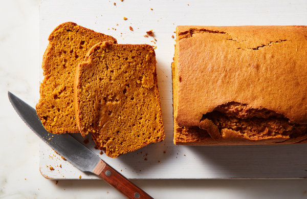

Pumpkin Bread
By Samantha Seneviratne
Moist and tender, delicately flavored with pumpkin and cinnamon, this humble loaf needs no bells and whistles.
If you want to go big, throw in more spices, like nutmeg and cloves, a hearty handful of chopped bittersweet
chocolate or a tablespoon of orange
zest. Stir in some chopped walnuts or pecans for added crunch, or scatter some pepitas or crushed gingersnaps over
the top. My favorite adornment is a simple cream cheese glaze. Mix together four ounces of cream cheese, a
couple tablespoons of warm milk, a tablespoon of confectioners’ sugar and a pinch of salt. Drizzle it over the
cooled loaf.

Ingredients
- ½ cup/120 milliliters vegetable oil, plus more for greasing the pan
- 2 ¼ cups/285 grams all-purpose flour
- 1 teaspoon baking powder
- 1 teaspoon ground cinnamon
- ¾ teaspoon kosher salt
- ½ teaspoon baking soda
- 1 (15-ounce) can ((about 2 cups) pumpkin purée
- 1 cup/200 grams granulated sugar
- ¾ cup/165 grams packed light or dark brown sugar
- 2 large eggs
- ¼ cup/60 milliliters full-fat sour cream or plain yogurt
- 1 ½ teaspoons pure vanilla extract
Directions
-
Heat the oven to 350 degrees. Oil a 8 1/2- or 9-inch loaf pan; line with parchment, leaving a 2-inch overhang on two sides.
-
In a medium bowl, whisk together the flour, baking powder, cinnamon, salt and baking soda. In a large bowl, whisk together the vegetable oil, pumpkin purée, granulated sugar, brown sugar, eggs, sour cream and vanilla. Fold the dry ingredients into the wet ingredients until fully combined. Transfer the batter to the prepared pan and smooth into an even layer.
-
Bake until the loaf is puffed and set, and a skewer inserted into the center comes out with moist crumbs attached, 60 to 75 minutes. Transfer the bread, in the pan, to a rack to cool for 20 minutes. Use a paring knife to cut the two exposed sides of bread away from the pan, then use the parchment to transfer the cake to the rack. Let cool completely.